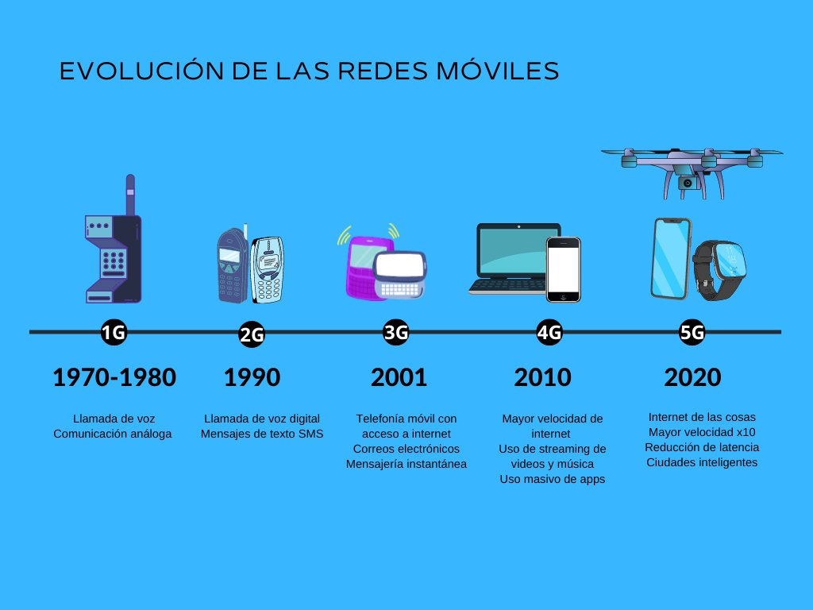

El 5G es la quinta generación del internet del celular. Imagina una calle angosta que se convierte en una autopista: ahora caben muchos más datos y van mucho más rápido. Por eso los videos cargan casi al instante y las videollamadas casi no se cortan.
Tres cosas hacen especial al 5G:
Más velocidad: hasta 10 veces más rápido que el 4G.
Casi sin demora: cuando tocas algo en tu celular, responde casi al instante. A esa demora se le llama latencia.
Muchas cosas conectadas: no solo celulares, también relojes, cámaras, semáforos y sensores. Puede conectar muchísimos aparatos en cada km2.
Con el 5G no solo se conectan las personas: también se conectan las cosas.
Cómo han cambiado las redes
Cada generación trajo algo nuevo. Mira este resumen:

Evolución de las redes móviles, de 1G a 5G.
1G (1970-1980): solo llamadas de voz, con señal análoga.
2G (1990): llamadas digitales y mensajes de texto (SMS).
3G (2001): internet en el celular, correos y mensajería.
4G (2010): más velocidad, videos, música en streaming y muchas apps.
5G (2020): internet de las cosas, velocidad x10, menos demora y ciudades inteligentes.
¿Para qué sirve?
El 5G solo sirve para ver videos más rápido. También sirve para autos, hospitales, fábricas y ciudades enteras.